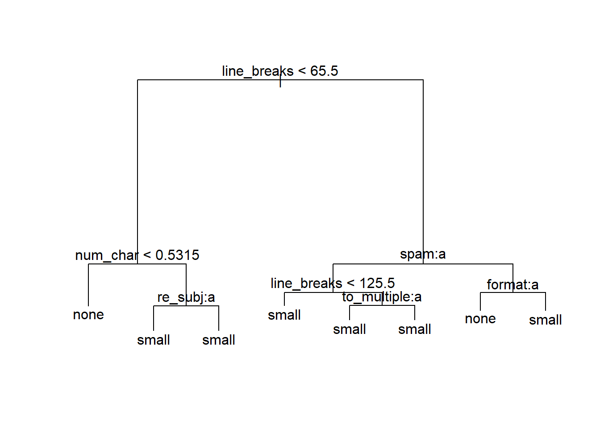

library(tidyverse)
library(openintro) # contains email data
library(ggplot2)
library(vcdExtra)
library(magrittr)
library(MASS)
library(lme4) # access the mixed functions
library(VGAM) # contains crash data
library(tree) # for classification trees
library(pROC) # ROC curves
library(boot) # contains the cv.glm functionLearnR 8
The topic of this lab is prediction in the generalized linear modeling setting. We’ll first talk about prediction (or classification) in the case of binary categories, and then about classification into \(k\) categories. We’ll also talk about prediction in the case of responses that are counts.
We’ll look at some R functions that perform cross-validation, and we’ll discuss issues of model comparison on the basis of prediction error.
To start off, please load these libraries that you’ll need for this lab. Note that you may have to install some of these packages first.
The Email Data
You’ve already seen the email dataset in the narrated lectures. The lecture goes into detail about how to calculate MSPE and how to plot an ROC curve to help come up with a classification rule. However, you might be wondering how to pick a good model in the first place. With so many variables in the email data set, trial and error (choosing a model and then calculating that model’s MSPE) does not seem very efficient. One fairly common thing to do is build a classification tree. We won’t go into any of the mathematics of how these trees are built (it is actually more complex than you might think and is a product of binary recursive partitioning). Classification trees are nice, however, in that they are quite easy to interpret and it is not too difficult to explain the results to non-statisticians. In other words, there’s no need to go into any explanation of logistic regression when using classification trees.
Binary Prediction/Classification
We will use the tree package in R for this part of the lab.
Note: the email data set has some missing values, which we will ignore to save time. This admittedly is not the wisest thing to do: with an important dataset, you must consider why there are missing values, and take action accordingly. At the very least, in a report, you should tell your readers that you built your model ignoring missing values in the data set.
First, let’s again use 75% of the data for training the model and use the remaining 25% for testing the model that we build, as you saw in the narrated lecture about the Classifier.Rmd code.
set.seed(90210) ## so you get the same results I do
(n <- dim(email)[1])[1] 3921(r <- round(n * .75))[1] 2941idx <- 1:n
nidx <- sample(idx, r, replace = FALSE)
email75 <- email[nidx, ]
email25 <- email[-nidx, ]The tree function follows the same form as a linear regression model: we give the function the response variable to the left of ~ and specify it as a factor so the function knows that the response is not numeric, and then we put all of the predictors to the right of ~.
tr <- tree(as.factor(spam) ~ to_multiple + from + cc + sent_email +
image + attach + dollar + winner + inherit +
viagra + password + num_char + line_breaks + format +
re_subj + exclaim_subj + urgent_subj + exclaim_mess +number, data = email75)
summary(tr)
Classification tree:
tree(formula = as.factor(spam) ~ to_multiple + from + cc + sent_email +
image + attach + dollar + winner + inherit + viagra + password +
num_char + line_breaks + format + re_subj + exclaim_subj +
urgent_subj + exclaim_mess + number, data = email75)
Variables actually used in tree construction:
[1] "line_breaks" "sent_email" "num_char" "to_multiple" "winner"
[6] "dollar" "format" "number"
Number of terminal nodes: 14
Residual mean deviance: 0.366 = 1071 / 2927
Misclassification error rate: 0.08296 = 244 / 2941 The summary information tells us that there were 8 variables that the function decided were “important” to include in the prediction model: line_breaks, sent_email, num_char, to_multiple, winner, dollar, format, and number (you can see these below the line that says Variables actually used in tree construction in the output above). We also see that on the training data the final tree misclassifies 8.296% of the emails. Let’s plot the tree to have a better idea about how the splits are made.
plot(tr); text(tr)If you zoom in on the plot above, you can better see what is happening. All emails are classified as not spam except at 5 of the nodes of the tree. Fr example, starting from the base of the tree, if there are less than 49.5 line breaks, the sent_email variable is 0, and the num_char variable is less than 0.7105, then the model calls the email spam. See if you can trace down to the other 4 nodes on the tree to see what other types of emails the model is classifying as spam.
Let’s now use our the model suggested by tree to make predictions on the test data:
email.noresp <- email25[, -1] ## dropping the response variable
mod1 <- glm(spam~line_breaks+sent_email+num_char+to_multiple+format,data=email75,family="binomial")Warning: glm.fit: fitted probabilities numerically 0 or 1 occurredpredictions <- predict(mod1, email.noresp, type = "link")
phats <- plogis(predictions)Now, let’s take a look at the ROC Curve for this predictive model and see if we can decide on a good classification rule.
roc(email25$spam,phats,plot=T)Setting levels: control = 0, case = 1Setting direction: controls < cases
Call:
roc.default(response = email25$spam, predictor = phats, plot = T)
Data: phats in 892 controls (email25$spam 0) < 88 cases (email25$spam 1).
Area under the curve: 0.8432It looks like we can simultaneously maximize specificity and sensitivity if we take the classification cutoff value to be around 0.75 – that is, we’ll classify an email as spam if \(\hat{p} \ge 0.75\). Then, we can use that to calculate the MSPE.
preds <- ifelse(phats>=0.75,1,0)
(MSPE <- mean((as.integer(email25$spam) - preds -1)^2))[1] 0.08979592We get a MSPE of 0.090. Note that this is slightly higher than the model misclassification rate from the summary(tr). This is typical, as the misclassification rate on the training data should be lower since the training data has an advantage over the test data in that the model is built using the training data.
This MSPE is quite similar to the value we calculated for several models in the narrated lectures, indicating that none of these models would necessarily be preferable. Please note that the models that we used in the narrated lectures were trained and tested on a different random split of the data. If we were truly comparing models, we should sure the we used the same training data and test data. The main advantage of the classification tree is its ease of interpretation, especially to someone who might not be familiar with statistics.
We find the classification tree to be a reasonable way to find a model with good predictive properties. There are certainly other methods of model selection that you can use.
Classification into \(k\) Categories
Classification trees extend very nicely to incorporating a response variable with more than 2 categories. On the other hand, if taking a more regression oriented approach, we would have to learn multinomial regression. It might not be a bad idea to familiarize yourself with multinomial regression, but the remainder of this section of lab will use classification trees instead.
To save the time of looking at a new data set, we will actually just use the email data set again. Now suppose that we want to classify whether emails contain no numbers, a small number, or a big number. I’ll leave it to your own imagination as to why we would want to classify emails into these three categories. Then we will use all of the other variables in the email data set as possible predictors.
Let’s re-select training and test sets:
set.seed(773355) ## so you get the same results I do
(n <- dim(email)[1])[1] 3921(r <- round(n * .75))[1] 2941idx <- 1:n
nidx <- sample(idx, r, replace = FALSE)
email75 <- email[nidx, ]
email25 <- email[-nidx, ]Now, we’ll run the classification tree algorithm using as.factor(number) as the response.
tr2 <- tree(as.factor(number) ~ spam +
to_multiple + from + cc + sent_email +
image + attach + dollar + winner + inherit +
viagra + password + num_char + line_breaks + format +
re_subj + exclaim_subj + urgent_subj + exclaim_mess, data = email75)
summary(tr2)
Classification tree:
tree(formula = as.factor(number) ~ spam + to_multiple + from +
cc + sent_email + image + attach + dollar + winner + inherit +
viagra + password + num_char + line_breaks + format + re_subj +
exclaim_subj + urgent_subj + exclaim_mess, data = email75)
Variables actually used in tree construction:
[1] "line_breaks" "num_char" "re_subj" "spam" "to_multiple"
[6] "format"
Number of terminal nodes: 8
Residual mean deviance: 1.19 = 3490 / 2933
Misclassification error rate: 0.2414 = 710 / 2941 plot(tr2); text(tr2)
When zooming in the plot, we see that the model will not classify any emails as containing a big number, but will for instance classify an email as containing no numbers when the number of line breaks is less than 65.5 and the number of characters is less than 0.5315. You can trace the other branches of the tree to see when emails will be classified as having a small number or having no numbers. The misclassification rate is 0.241.
In this approach, we’ll just use the default classification rule for tree objects in the predict.tree function:
predictions <- predict(tr2, email25, type = "class")Here, let’s calculate the misclassification rate – we’ll just sum up the number of times the predicted classification does not match the classification in the email25 data.
sum(predictions != email25$number) / length(predictions)[1] 0.2285714The misclassification rate is 0.229, which is actually quite similar to the misclassification rate provided in the output of the summary for the training data for this particular response. While this is unusual, it is not impossible: perhaps in this case, the test data set was just relatively easy to predict.
We will stop here with classification, but you can imagine a few extensions. What if we care more about an email being misclassified as having no numbers than an email being misclassified as having a large number? Then we might want to change our model to reflect this preference.
Crash Data: Prediction in a Poisson GLM
For prediction in a Poisson GLM, we will use the crashi data in the VGAM package, which has data on the number of crashes (a count) in New Zealand in 2009. The columns in the data set are the days of the week and the rows are the hour in military time (for example, the fifth row in the Wednesday column says that there were 11 reported crashes in 2009 in New Zealand on Wednesdays between 4:00 am and 5:00 am).
data(crashi)
# ?crashi
head(crashi)| Mon | Tue | Wed | Thu | Fri | Sat | Sun | |
|---|---|---|---|---|---|---|---|
| 0 | 16 | 10 | 22 | 12 | 29 | 55 | 55 |
| 1 | 13 | 11 | 15 | 23 | 23 | 42 | 64 |
| 2 | 5 | 8 | 16 | 13 | 24 | 37 | 64 |
| 3 | 6 | 4 | 8 | 12 | 19 | 31 | 45 |
| 4 | 7 | 6 | 11 | 16 | 11 | 35 | 35 |
| 5 | 12 | 14 | 14 | 18 | 19 | 27 | 35 |
We first need to restructure the data a bit. Instead of using tidyr, we can actually just use the stack function in base R, which combines the seven columns in crashi into a single column with the number of crashes and a second column that preserves which day of the week the number of crashes came from. Then, we can manually add hours (0 through 23) as a third column in our restructured data set.
hour <- rownames(crashi) ## grab the hours
crashi2 <- stack(crashi) ## combine 7 columns of crashes into 1
names(crashi2) <- c("Count","Day")
crashi2$Day <- factor(crashi2$Day,levels(crashi2$Day)[c(2,6,7,5,1,3,4)]) # make sure the days are ordered correctly
crashi2$Hour <- as.numeric(rep(hour, ncol(crashi)))
## add a column with hour and make it numeric (not categorical)
head(crashi2)| Count | Day | Hour |
|---|---|---|
| 16 | Mon | 0 |
| 13 | Mon | 1 |
| 5 | Mon | 2 |
| 6 | Mon | 3 |
| 7 | Mon | 4 |
| 12 | Mon | 5 |
First, let’s make an exploratory plot of the data. This is a fairly simple plot with the number of crashes on the y-axis, the hour of the day on the x-axis, and we’ll use colour for the different days of the week.
ggplot(data = crashi2, aes(x = Hour, y = Count, group = Day)) +
geom_point(aes(colour = Day)) +
geom_line(aes(colour = Day))The number of crashes across the different days of the week look more similar than what you may have expected. We can see a few reasonable differences between weekdays and weekends – early Saturday morning and early Sunday morning between midnight and 5:00 am, there seem to be more crashes than on the other days of the week at those times, likely because drivers are out much later on weekends. Also, during the 7:00 - 8:00 am rush hour on Monday through Friday, there are many more crashes than on Saturday and Sunday during these times.
Next, we can fit a Poisson regression model that just includes terms for Day and Hour.
mod1 <- glm(Count ~ Day + Hour, data = crashi2,
family = "poisson")
summary(mod1)
Call:
glm(formula = Count ~ Day + Hour, family = "poisson", data = crashi2)
Coefficients:
Estimate Std. Error z value Pr(>|z|)
(Intercept) 3.657014 0.032391 112.902 < 2e-16 ***
DaySat 0.147305 0.036171 4.073 4.65e-05 ***
DaySun -0.024166 0.037705 -0.641 0.5216
DayFri 0.238198 0.035435 6.722 1.79e-11 ***
DayMon -0.088033 0.038329 -2.297 0.0216 *
DayWed 0.059963 0.036927 1.624 0.1044
DayThu 0.151539 0.036135 4.194 2.74e-05 ***
Hour 0.034580 0.001418 24.391 < 2e-16 ***
---
Signif. codes: 0 '***' 0.001 '**' 0.01 '*' 0.05 '.' 0.1 ' ' 1
(Dispersion parameter for poisson family taken to be 1)
Null deviance: 4227.4 on 167 degrees of freedom
Residual deviance: 3499.4 on 160 degrees of freedom
AIC: 4480.4
Number of Fisher Scoring iterations: 5Notice how we just used Hour as a linear predictor here. Logically, this does not really make the most sense, as there are clear up and down patterns in the counts. What can we do instead? We might split up time into a few categories, such as morning, noon, and night. Also, from the plot there appears to be hardly any difference in crash counts among Monday, Tuesday, Wednesday, and Thursday. As one option, we might combine these days into one category (Weekday), leaving Friday, Saturday and Sunday as separate categories.
Another option would be to include a few transformations of the Hour variable to model the cyclic nature of the data. Specifically, if we include a few sine and cosine term, we might do a decent job at modeling the cycles. For now, however, we’ll proceed by using some new indicator functions.
## lump Mon, Tue, Wed, Thu into a single Weekday category and
## categorize the times into Early Morning, Morning, Afternoon, and Evening
crashi2 %<>% mutate(.,Day.Cat = ifelse((Day != "Fri" & Day != "Sat" & Day != "Sun"),"Weekday",as.character(Day)), Time.Cat = cut(Hour,
breaks = c(-1, 5.5, 11.5, 18.5, 25),
labels = c("Early.Morn", "Morn", "Afternoon", "Evening")))
head(crashi2)| Count | Day | Hour | Day.Cat | Time.Cat |
|---|---|---|---|---|
| 16 | Mon | 0 | Weekday | Early.Morn |
| 13 | Mon | 1 | Weekday | Early.Morn |
| 5 | Mon | 2 | Weekday | Early.Morn |
| 6 | Mon | 3 | Weekday | Early.Morn |
| 7 | Mon | 4 | Weekday | Early.Morn |
| 12 | Mon | 5 | Weekday | Early.Morn |
The model we fit above didn’t include interactions, but there are likely some interactions between Day of the Week and Time of Day. As an example, we would expect the number of crashes on Monday mornings to be different than those for Sunday mornings. This next model that we’ll fit uses our new indicator variables and includes some interaction terms.
mod2 <- glm(Count ~ Day.Cat * Time.Cat, data = crashi2,
family = "poisson")
summary(mod2)
Call:
glm(formula = Count ~ Day.Cat * Time.Cat, family = "poisson",
data = crashi2)
Coefficients:
Estimate Std. Error z value Pr(>|z|)
(Intercept) 3.03655 0.08944 33.950 < 2e-16 ***
Day.CatSat 0.59664 0.11138 5.357 8.47e-08 ***
Day.CatSun 0.86878 0.10656 8.153 3.56e-16 ***
Day.CatWeekday -0.53785 0.10689 -5.032 4.85e-07 ***
Time.CatMorn 1.26976 0.10123 12.544 < 2e-16 ***
Time.CatAfternoon 1.80763 0.09552 18.923 < 2e-16 ***
Time.CatEvening 1.20621 0.10428 11.567 < 2e-16 ***
Day.CatSat:Time.CatMorn -0.76247 0.13155 -5.796 6.79e-09 ***
Day.CatSun:Time.CatMorn -1.28668 0.13044 -9.864 < 2e-16 ***
Day.CatWeekday:Time.CatMorn 0.57318 0.11922 4.808 1.53e-06 ***
Day.CatSat:Time.CatAfternoon -0.80471 0.12213 -6.589 4.43e-11 ***
Day.CatSun:Time.CatAfternoon -1.22433 0.11868 -10.316 < 2e-16 ***
Day.CatWeekday:Time.CatAfternoon 0.34012 0.11354 2.995 0.00274 **
Day.CatSat:Time.CatEvening -0.66810 0.13552 -4.930 8.23e-07 ***
Day.CatSun:Time.CatEvening -1.55050 0.14111 -10.988 < 2e-16 ***
Day.CatWeekday:Time.CatEvening 0.03632 0.12444 0.292 0.77035
---
Signif. codes: 0 '***' 0.001 '**' 0.01 '*' 0.05 '.' 0.1 ' ' 1
(Dispersion parameter for poisson family taken to be 1)
Null deviance: 4227.41 on 167 degrees of freedom
Residual deviance: 902.73 on 152 degrees of freedom
AIC: 1899.7
Number of Fisher Scoring iterations: 4Wow, just about everything seems important here! Let’s replot the data with the fitted values for this model included.
crashi2$fits <- predict.glm(mod2,crashi2,type="response")
ggplot(data = crashi2, aes(x = Time.Cat, y = Count, group = Day.Cat)) +
geom_point(aes(colour = Day.Cat)) +
geom_line(aes(Time.Cat,fits,color=Day.Cat))We have coarsened the data by creating these new time and day categories, and that’s why the plot is different from the original plot we created. This is not the only way to proceed with these data, but it’s effective for our purposes.
Notice in the summary model output that there is evidence for overdispersion in the counts the residual deviance from mod2 is about 903 and the corresponding df are 152. Therefore, we should fit a negative binomial model to address the over dispersion.
mod3 <- glm.nb(Count ~ Day.Cat * Time.Cat, data = crashi2)
summary(mod3)
Call:
glm.nb(formula = Count ~ Day.Cat * Time.Cat, data = crashi2,
init.theta = 13.71581333, link = log)
Coefficients:
Estimate Std. Error z value Pr(>|z|)
(Intercept) 3.03655 0.14196 21.391 < 2e-16 ***
Day.CatSat 0.59664 0.19159 3.114 0.001845 **
Day.CatSun 0.86878 0.18883 4.601 4.21e-06 ***
Day.CatWeekday -0.53785 0.16314 -3.297 0.000977 ***
Time.CatMorn 1.26976 0.18588 6.831 8.42e-12 ***
Time.CatAfternoon 1.80763 0.17802 10.154 < 2e-16 ***
Time.CatEvening 1.20621 0.19392 6.220 4.97e-10 ***
Day.CatSat:Time.CatMorn -0.76247 0.25673 -2.970 0.002979 **
Day.CatSun:Time.CatMorn -1.28668 0.25617 -5.023 5.09e-07 ***
Day.CatWeekday:Time.CatMorn 0.57318 0.21117 2.714 0.006642 **
Day.CatSat:Time.CatAfternoon -0.80471 0.24505 -3.284 0.001024 **
Day.CatSun:Time.CatAfternoon -1.22433 0.24335 -5.031 4.88e-07 ***
Day.CatWeekday:Time.CatAfternoon 0.34012 0.20273 1.678 0.093415 .
Day.CatSat:Time.CatEvening -0.66810 0.26801 -2.493 0.012675 *
Day.CatSun:Time.CatEvening -1.55050 0.27088 -5.724 1.04e-08 ***
Day.CatWeekday:Time.CatEvening 0.03632 0.22114 0.164 0.869524
---
Signif. codes: 0 '***' 0.001 '**' 0.01 '*' 0.05 '.' 0.1 ' ' 1
(Dispersion parameter for Negative Binomial(13.7158) family taken to be 1)
Null deviance: 880.82 on 167 degrees of freedom
Residual deviance: 172.14 on 152 degrees of freedom
AIC: 1439.5
Number of Fisher Scoring iterations: 1
Theta: 13.72
Std. Err.: 1.93
2 x log-likelihood: -1405.533 The negative binomial model actually gives the same coefficients as the Poisson model (verified below), but the standard errors are different. Therefore, if we care only about making predictions and do not care what the variance of our predictions is, then we can fit either model. If we do care about the variance of our predictions and we typically should, then we should use the negative binomial model. There are actually cases where we do not really care about the variance of our prediction and only want to make the best possible choice (for example, if I want to drive somewhere on the weekend when there is the lowest chance of a crash, I might not care about the variability in the model: I simply would pick the time with the lowest fit number of crashes).
## coefficients of the two models are the same
cbind(mod2$coefficients, mod3$coefficients) [,1] [,2]
(Intercept) 3.03655427 3.03655427
Day.CatSat 0.59663628 0.59663628
Day.CatSun 0.86877975 0.86877975
Day.CatWeekday -0.53785430 -0.53785430
Time.CatMorn 1.26976054 1.26976054
Time.CatAfternoon 1.80763282 1.80763282
Time.CatEvening 1.20621030 1.20621030
Day.CatSat:Time.CatMorn -0.76246537 -0.76246537
Day.CatSun:Time.CatMorn -1.28668142 -1.28668142
Day.CatWeekday:Time.CatMorn 0.57317806 0.57317806
Day.CatSat:Time.CatAfternoon -0.80470838 -0.80470838
Day.CatSun:Time.CatAfternoon -1.22433047 -1.22433047
Day.CatWeekday:Time.CatAfternoon 0.34011643 0.34011643
Day.CatSat:Time.CatEvening -0.66809524 -0.66809524
Day.CatSun:Time.CatEvening -1.55049823 -1.55049823
Day.CatWeekday:Time.CatEvening 0.03632441 0.03632441Let’s now suppose that we want to predict the number of crashes that will occur on Saturday in the early morning hours in this upcoming year. Perhaps we need this for scheduling purposes to assign a proper number of paramedics during these hours. Before we get to this, note the following:
Note 1: In past labs, we were careful to say that fitting a bunch of models and then making conclusions about the association of explanatory variables with the response variable was not an appropriate thing to do (data snooping). However, if we are only interested in prediction and not, for instance making a conclusion along the lines of Day of the week being statistically associated with the number of crashes, then fitting many models is not much of an issue.
Note 2: When we make a prediction for an upcoming year, we make the very crucial assumption that there will not be any systematic changes in the number crashes or roads or rules or behaviors of people in the following year. This may or may not be reasonable depending on the application. You may not know much about the New Zealand transit system, but, in a real application, you should be able to evaluate any generalization assumptions logically.
Let’s make the prediction using both the Poisson model and the negative binomial model that accounts for the over dispersion.
## define predictor values
newdat <- data.frame(Day.Cat = "Sat", Time.Cat = "Early.Morn")
## predict using Poisson regression and NB regression
predict(mod2, newdata = newdat, type = "response") 1
37.83333 predict(mod3, newdata = newdat, type = "response") 1
37.83333 We see that, as expected, the Poisson model and the Negative Binomial model give us the same prediction of 37.8 crashes per year (since the regression coefficients for the two models were identical).
## manually doing the back transformation
predict(mod2, newdata = newdat, se.fit = TRUE)$fit
1
3.633191
$se.fit
[1] 0.06637233
$residual.scale
[1] 1exp(3.633191)[1] 37.83335The most important thing to realize is that we have to pay attention to the scale that the predict function returns our prediction. Predicting 3.6 crashes per year on Saturday in the early morning hours is much different than predicting 37.8 crashes per year on Saturday in the early morning hours!
If we want a standard error associated with our prediction,
predict(mod2, newdata = newdat, type = "response", se.fit = TRUE)$fit
1
37.83333
$se.fit
1
2.511086
$residual.scale
[1] 1predict(mod3, newdata = newdat, type = "response", se.fit = TRUE)$fit
1
37.83333
$se.fit
1
4.868124
$residual.scale
[1] 1Now we see that the standard error for the prediction in the Poisson model is much lower than the standard error in the negative binomial model. If we naively ignore overdispersion in the data, then our prediction interval would be too narrow! If we don’t care about the standard error of our prediction, then either model would be fine to use.
Lab Questions: Cross validation
The Prestige data set in the car package contains data on the average income, average education, percentage of women, Pineo-Porter prestige score, and type of occupation for 102 occupations in 1971. The prestige score is actually a score on a 0 to 100 scale, but we will dichotomize it here to perform predictions.
You’ll use the cv.glm function in the boot R package.
# install.packages("car") ## contains the Prestige data
library(car)
# ?PrestigeFirst, let’s create a binary prestige score, and then fit a simple model to illustrate the functionality in cvTools.
set.seed(42491) ## so you get the same results I do
# dichotomize presige
Pres <- Prestige
Pres %<>% mutate(.,presCat = ifelse(prestige>=70,1,0))
# fit a model
mod <- glm(presCat ~ education, data = Pres, family = "binomial")
summary(mod)
Call:
glm(formula = presCat ~ education, family = "binomial", data = Pres)
Coefficients:
Estimate Std. Error z value Pr(>|z|)
(Intercept) -20.8612 6.4435 -3.238 0.00121 **
education 1.3983 0.4401 3.177 0.00149 **
---
Signif. codes: 0 '***' 0.001 '**' 0.01 '*' 0.05 '.' 0.1 ' ' 1
(Dispersion parameter for binomial family taken to be 1)
Null deviance: 69.764 on 101 degrees of freedom
Residual deviance: 30.596 on 100 degrees of freedom
AIC: 34.596
Number of Fisher Scoring iterations: 8Find the MSPE for 5-fold and 10-fold cross validation on the
modobject. Report these values.What is a different cost that you can use in the
cv.glmfunction [see Examples in the help file]? What do you think are some advantages and disadvantages of the various types of costs that you can use?
Let’s compare the MSPE of the model above to a model with education, women, income, and their two-way interactions.
mod2 <- glm(presCat ~ education*women + education*income + women*income, data = Pres, family = "binomial")
summary(mod2)
Call:
glm(formula = presCat ~ education * women + education * income +
women * income, family = "binomial", data = Pres)
Coefficients:
Estimate Std. Error z value Pr(>|z|)
(Intercept) -9.842e+00 1.400e+01 -0.703 0.482
education 7.447e-01 9.788e-01 0.761 0.447
women -2.503e-01 3.542e-01 -0.707 0.480
income -1.893e-03 1.731e-03 -1.093 0.274
education:women 2.634e-02 3.215e-02 0.819 0.413
education:income 1.248e-04 1.113e-04 1.121 0.262
women:income -2.184e-05 1.784e-05 -1.224 0.221
(Dispersion parameter for binomial family taken to be 1)
Null deviance: 69.764 on 101 degrees of freedom
Residual deviance: 26.874 on 95 degrees of freedom
AIC: 40.874
Number of Fisher Scoring iterations: 9How do the MSPE’s compare?
In the
crashi2data frame that you created during the lab, make a new variable that puts the day of the week Friday as a Weekday and lumps Saturday and Sunday into one category, Weekend. So this new variable will have two categories: Weekday or Weekend. Fit a Poisson regression model with your new variable andTime.Catas well as their interaction.
## Make new variable here
## Perform Poisson regression here- Use the
cv.glmfunction withK= 10 to find a MSPE for this model.
set.seed(77732)
## do cross-validation here using cv.glm